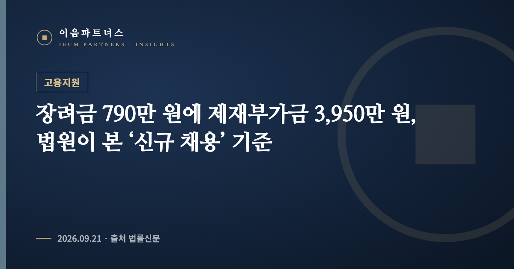

장려금 790만 원에 제재부가금 3,950만 원, 법원이 본 ‘신규 채용’ 기준

장애인 직원을 새로 뽑았다며 장애인신규고용장려금 790만 원을 받은 한 인쇄·포장 업체가 장려금과 이자를 돌려주고 제재부가금 3,950만 원까지 물게 됐습니다. 1심 법원도 이 처분이 적법하다고 판결했습니다. 대표님 회사의 고용 지원금 서류는 실제 근무 모습과 같으신가요? 이 글에서는 사건의 내용과 법원이 본 기준, 신청 전에 확인할 것을 정리합니다.
이 회사가 물게 된 제재부가금(부정하게 받은 지원금에 더해 물리는 제재금)은 받은 장려금의 5배에 이릅니다. 계열사나 가족회사 사이에 직원이 옮겨 다니는 회사라면 고용 지원금을 신청하기 전에 한 번 점검해 보시길 권합니다. 신청 서류를 함께 보고 싶으시면 카카오톡 채널 이음파트너스로 편하게 문의해 주세요.
무슨 일이 있었나
충북 괴산군에서 인쇄·포장 사업을 하는 A사는 장애가 있는 직원을 새로 채용했다며 장려금을 두 차례 신청해 총 790만 원을 받았습니다. 한국장애인고용공단은 이 직원이 형식상 다른 법인과 근로계약을 맺었을 뿐 실제로는 A사에서 계속 일했다고 보고, 장려금과 이자를 환수하고 제재부가금 3,950만 원을 부과했습니다(법률신문).
| 구분 | 내용 |
|---|---|
| 받은 장려금 | 두 차례 신청, 총 790만 원 |
| 공단 처분 | 장려금·이자 환수, 제재부가금 3,950만 원 |
| 쟁점 | 다른 법인과 계약했지만 계속 A사에서 일한 직원이 신규 고용인가 |
| 판결 | 서울행정법원 2026년 7월 24일 1심, 회사 청구 기각(2025구합54128) |
회사는 공단 담당자가 신규고용장려금으로 신청하면 더 받을 수 있다며 서류를 임의로 바꿔 신청했고, 직원은 다른 법인 소속이며, 부정수급할 고의도 없었다고 주장했습니다. 이 판결은 1심이며, 항소 여부와 확정 여부는 기사에서 확인되지 않습니다.
법원은 무엇을 보고 판단했나
① 계약서보다 실제 근무
직원은 다른 법인과 계약했지만 A사 사업장에서 기계 수리·청소 등을 했고, A사 출근부에 출퇴근 시간을 적었으며 연차 사용도 A사 대표에게 보고했습니다. 법원은 계약 상대 법인이 실질적으로 A사의 가족회사라는 점도 함께 고려해, 이 직원을 신규 고용 근로자로 보지 않았습니다.
② 담당자가 권했다는 주장
장려금 신청에는 신청인의 공동인증서(전자 서명용 인증서)가 필요하고, 회사는 신청할 때마다 공단에서 접수 문자를 받았습니다. 법원은 담당자가 임의로 신청했다고 볼 뚜렷한 자료가 없다며 주장을 받아들이지 않았고, 회사가 신규 채용이 아님을 알고도 청구했다고 보아 감면 대상도 아니라고 판단했습니다.
③ 제재는 고의가 없어도 가능
법원은 행정법규 위반에 대한 제재는 객관적인 위반 사실을 기준으로 한다며 "특별한 사정이 없는 한 고의나 과실과 무관하게 부과할 수 있다"고 밝혔습니다(법률신문). 몰랐다는 설명만으로는 제재를 피하기 어려울 수 있다는 뜻으로 읽힙니다.
대표님이 지금 확인할 것
- 장려금 대상 직원이 최근 계열사·가족회사 등 관계 회사에서 일한 적이 있는지 먼저 확인하세요.
- 근로계약서의 회사와 출근부·연차 보고·업무 지시가 이뤄지는 회사가 같은지 살펴보세요.
- 누가 신청을 도와주더라도 회사 공동인증서로 제출되는 서류는 대표님이 직접 읽어 보시길 권합니다.
- 대상 여부가 애매하다면 신청 전에 공단이나 노무사에게 먼저 문의해 보세요.
고용 지원금도 신청은 회사가 직접 하고, 지원 여부와 금액은 각 기관 심사로 정해집니다. 받을 수 있는지보다 받은 뒤에도 문제가 없는지를 함께 따져 보는 것이 안전합니다.
참고한 자료
- [판결] 기존 장애인 근로자 ‘신규 채용’이라고 속여 장려금…법원 “신규고용장려금 환수 적법” — 법률신문 (2026.09.21)
고용 지원금 신청이나 계열사 간 인력 운영을 함께 점검하고 싶으시다면 카카오톡 채널 이음파트너스로 편하게 문의해 주세요.
※ 이 글은 일반적인 정보 제공을 위한 것으로, 개별 사안은 세무사·노무사 등 전문가와 함께 확인하시기 바랍니다.